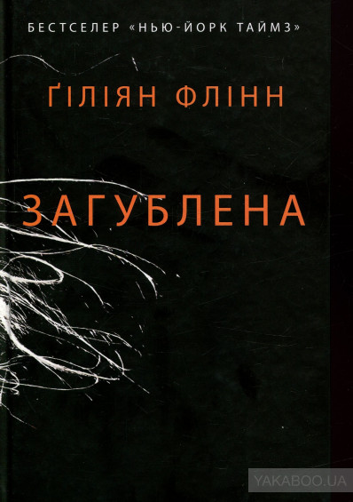
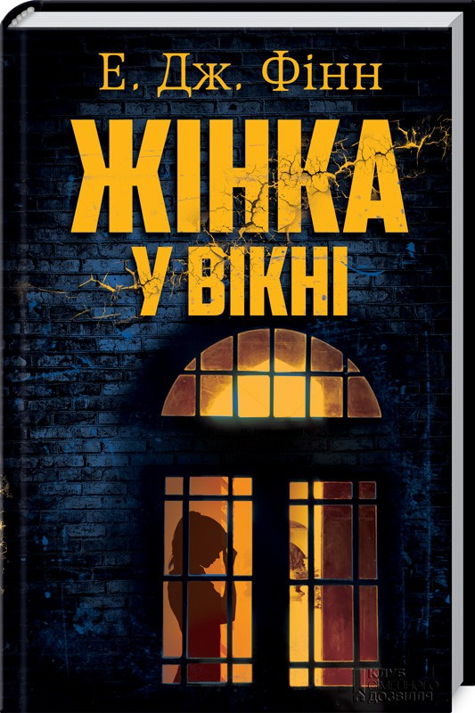
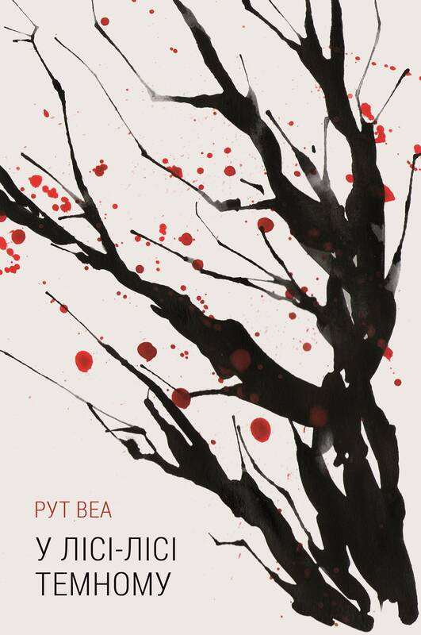
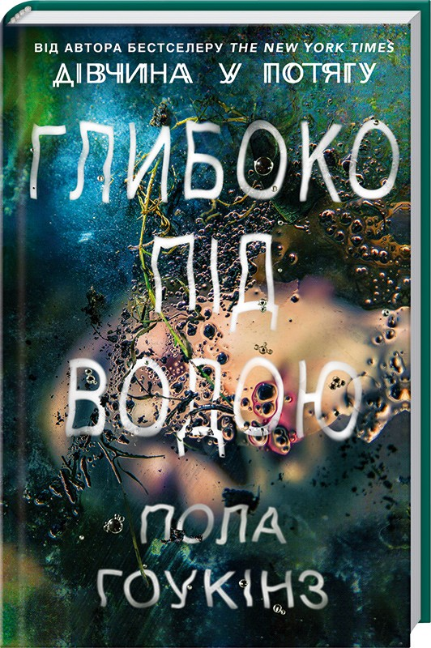

Захоплюючі історії для тих, хто не проти полоскотати свої нерви. Психологічні та детективні трилери, за якими були зняті найкращі фільми
Дівчина у потягу
Рейчел щодня сідає на той самий потяг. Проїжджаючи повз затишні
приміські будиночки, вона щодня бачить подружню пару, яка снідає на веранді.
Рейчел подобається спостерігати за ними, адже їхнє життя видається їй більш
радісним, ніж її власне. Але одного разу в цьому безтурботному раю, яким вона
уявляє їхню оселю, жінку спіткає дещо приголомшливе, те що повністю руйнує
картинку в її голові. У поліції Рейчел не повірять…
Загублена

Нік та Емі Данни саме збираються святкувати п’яту річницю шлюбу,
коли Емі зникає. Поліція підозрює Ніка в убивстві дружини. Друзі Емі раптом починають
розповідати, що вона боялася чоловіка, що мала від нього секрети. Він присягається,
що це неправда. Однак поліція перевіряє його комп’ютер і виявляє дуже дивну історію
пошуків. Нік запевняє, що він тут зовсім ні до чого, та чи можна йому вірити? А тут
ще ці наполегливі дзвінки на його мобільний телефон... То що ж насправді сталося
з чарівною Ніковою дружиною?
Дівчина у вікні

Анна Фокс самотньо живе у своїй квартирі в Нью-Йорку. Чоловік Ед та
донька Олівія трагічно загинули. Це надломило психіку жінки, вона почала шукати
забуття в алкоголі та самотності. Мешкаючи осібно, Анна виявляє цікавість до сусідів.
Здається, їхнє життя теж не таке просте, як здається. Але одного дня Анна помічає, що
й за нею хтось стежить. Більш того, цей хтось проник до її будинку, до її віртуального
життя… Чи це все — її хвора уява? Тепер вона намагається зрозуміти, де реальність, а
де — фантазія чи галюцинація, а також хто прагне довести її до божевілля. Бо іноді все
не є таким, яким видається…
У лісі-лісі темному

Коли старанно приховані і запорошені скелети таки вибираються зі старих
шаф на світ божий, — чекай біди. Головна героїня, письменниця, несподівано отримує
запрошення на дівич-вечірку шкільної подруги, з якою не спілкувалася років десять.
Вихідні мають промайнути весело — скляний будинок у густих англійських лісах, весела
компанія, гучні посиденьки. Та щось пішло не так... За дві доби вона, зранена та
скалічена, приходить до тями в лікарняній палаті і з жахом усвідомлює, що нічогісінько
не пам’ятає... Хоча й відчуває: трапилося щось жахливе.
Глибоко під водою

Бережіться тихої води, адже ви не знаєте, що ховається під нею… Гарне
мирне містечко. А поруч із ним Затон Утоплениць — затока, яка протягом століть забирала
життя десятків жінок. Письменницю Нел Ебботт зачаровували моторошні легенди про це місце
і його жертв. Та ось Нел стала однією з них… Здавна чорні таємниці затону отруювали
свідомість тутешніх людей. І сьогодні мешканці містечка вже не мають вибору: його
зробили за них сто років тому, а може, кілька століть. Загадку потрібно розгадати
до того, як темна вода прийме у свої глибини нову жертву.
Приємного відпочинку)))